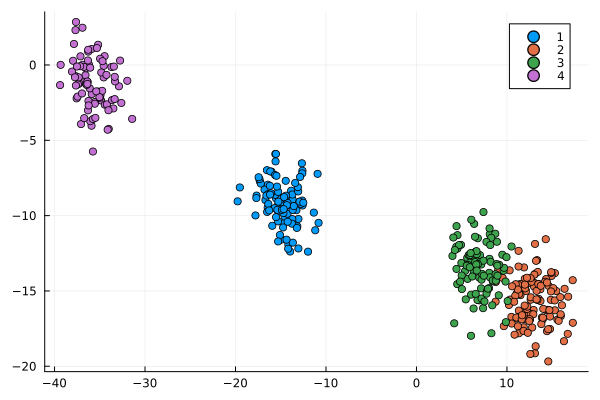
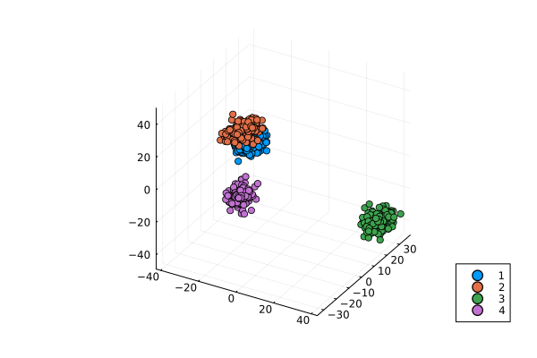

Home
CluGen.jl is a Julia implementation of the clugen algorithm for generating multidimensional clusters. Each cluster is supported by a line segment, the position, orientation and length of which guide where the respective points are placed. It provides the clugen() function for this purpose, as well as a number of auxiliary functions, used internally and modularly by clugen(). Users can swap these auxiliary functions by their own customized versions, fine-tuning their cluster generation strategies, or even use them as the basis for their own generation algorithms.
How to install
From Julia's general registry:
julia> using Pkg
julia> Pkg.add("CluGen")From source/GitHub:
julia> using Pkg
julia> Pkg.add("https://github.com/clugen/CluGen.jl")Quick start
using CluGen, Plotso = clugen(2, 4, 400, [1, 0], pi / 8, [20, 10], 10, 1, 1.5)
p = plot(o.points[:, 1], o.points[:, 2], seriestype = :scatter, group=o.clusters)
o = clugen(3, 4, 1000, [1, 0, 1], pi / 8, [20, 15, 25], 16, 4, 3.5)
p = plot(o.points[:, 1], o.points[:, 2], o.points[:, 3], seriestype = :scatter, group=o.clusters)